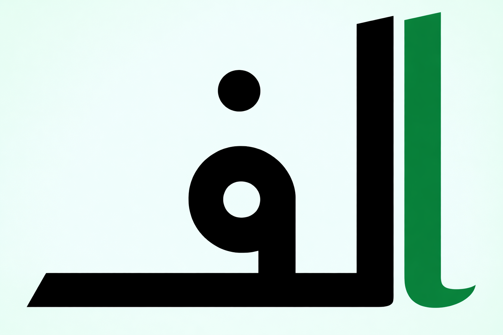

Our Wings
Tech Admins
ടെക് അഡ്മിൻസ്കാലത്തിനൊപ്പം സാങ്കേതിക വിദ്യയും മുന്നേറിക്കൊണ്ടിരിക്കുകയാണ്. അതിനെകീഴടക്കാനുള്ള നെട്ടോട്ടത്തിലാണ് ആധുനിക സമൂഹം. സാങ്കേതിവിദ്യ കൂടുതലായും ഉപയോഗിക്കുന്നത് വിദ്യാര്ത്ഥികളാണ്. അതിനെ ഫലപ്രദമായ രീതിയിൽ ഉപയോഗപ്പെടുത്താൻ വിദ്യാര്ത്ഥികളെ ബോധവല്ക്കരിക്കുക, എന്ന ലക്ഷ്യത്തോടെ എസ്.കെ.എസ്.ബി.വി. സംസ്ഥാന കമ്മിറ്റിയുടെ കീഴില് രൂപപ്പെടുത്തിയ വിംഗാണ് tech admins. ഇന്ന് ലോകത്ത് അറിയപ്പെടുന്ന സാമൂഹ്യ മാധ്യമ ശൃംഘലകളായ ഫെയ്സ്ബുക്ക്, വാട്സ്ആപ്പ്, ഇമെയില്, വെബ്സൈറ്റ് തുടങ്ങിയ അഞ്ച് മേഖലകളിലൂടെ ഈ സംഘത്തിന്റെ ചലനങ്ങൾ പുറം ലോകത്തെത്തിക്കുക കൂടിയാണ് ലക്ഷ്യം.

Alif
അലിഫ്ആധുനിക വിദ്യാഭ്യാസ മേഖല വളരെയധികം മുന്നോട്ടു ചലിച്ചുകൊണ്ടിരിക്കുകയാണ്. വീട്ടിലിരുന്ന് വിരല്തുമ്പ് കൊണ്ട് അറിവ് നേടാവുന്ന വിധം മാറ്റങ്ങള് വന്നുകൊണ്ടിരിക്കുന്നു. വിദ്യാഭ്യാസ പ്രവർത്തനങ്ങളുടെ പ്രസക്തി ഏറിവരുന്ന സാഹചര്യത്തിലാണ് ’അലിഫ്’ എന്ന വിദ്യാഭ്യാസ വിംഗന് രൂപം നല്കുന്നത്. മതവിദ്യാഭ്യാസത്തോടൊപ്പം ഭൗതികവിദ്യാഭ്യാസം എത്തിപ്പിടിക്കാനുള്ള നൂതനമാര്ഗം വിദ്യാര്ത്ഥികള്ക്ക് നല്കുക എന്നതാണ് ‘അലിഫ്’ കൊണ്ടുദ്ദേശിക്കുന്നത്. സംഘടന ചെയതു കൊണ്ടിരിക്കുന്നതും ചെയ്യാനുള്ളതുമായ പ്രവർത്തനങ്ങളെ ഒരു വിംഗിന് കീഴിൽ ഏകോപിപ്പിക്കുകയാണ് അലിഫ്.
Adab
അദബ്കുട്ടികളുട സ്വഭാവ സംസ്കരണവും വിശ്വാസ സംരക്ഷണവും പ്രോത്സാഹിപ്പിക്കുന്ന രീതിയില് പദ്ധതികള് തയ്യാറാക്കി നടപ്പില് വരുത്തുക എന്ന ലക്ഷ്യത്തോടെയാന്ന് സംഘടനയുടെ കീഴിൽ അദബ് വിംഗ് സംവിധാനിച്ചത്. അവസരോചിതമായി പല പ്രവര്ത്തനങ്ങളും നടത്തിവരുന്നു.
Qidma
ഖിദ്മലോകവും കാലവും മാറിക്കൊണ്ടിരിക്കുമ്പോൾ സമൂഹത്തോടും സമുദായത്തോടും മുഖം തിരിക്കുന്ന ഇളം തലമുറയെ നാടിനും സമൂഹത്തിന്നും ഉപകാരപ്പെടുന്ന പ്രവര്ത്തനങ്ങളിലൂടെ പഠനത്തോടൊപ്പം അവരെ സന്നദ്ധ സേവന രംഗത്തേക്ക് വഴി നടത്താനാണ് ’ഖിദ്മ’ എന്ന വിംഗിനു രൂപം നല്കുന്നത്. മദ്റസ തലങ്ങളിൽ നടന്നുകൊണ്ടിരിക്കുന്ന സോഷ്യല് വർക്കുകളെ ഒരു വിംഗിന്റെ നേതൃത്വത്തില് ഏകീകരിച്ചു കൊണ്ടിരിക്കുന്നു.